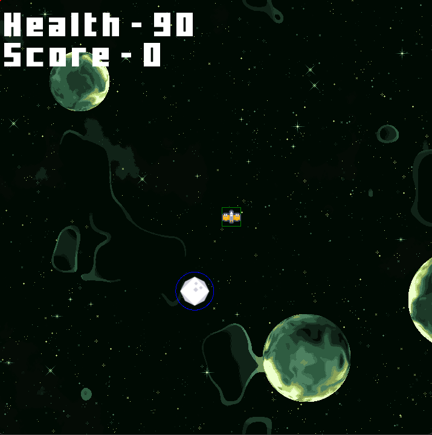
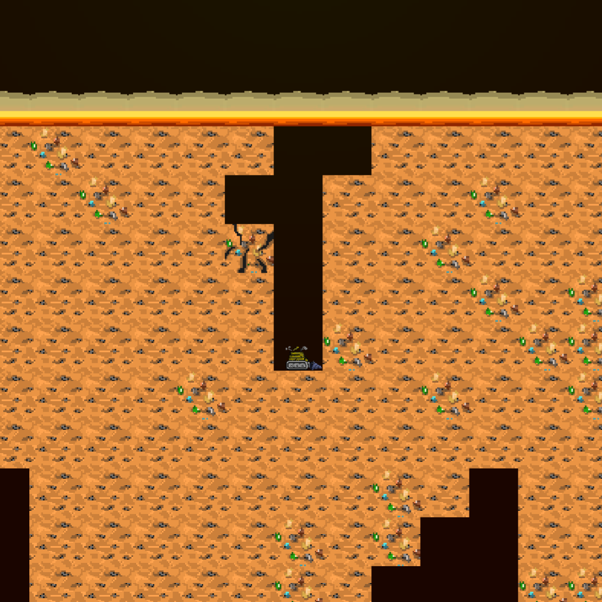
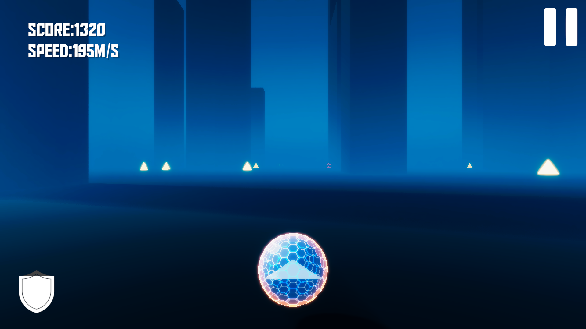
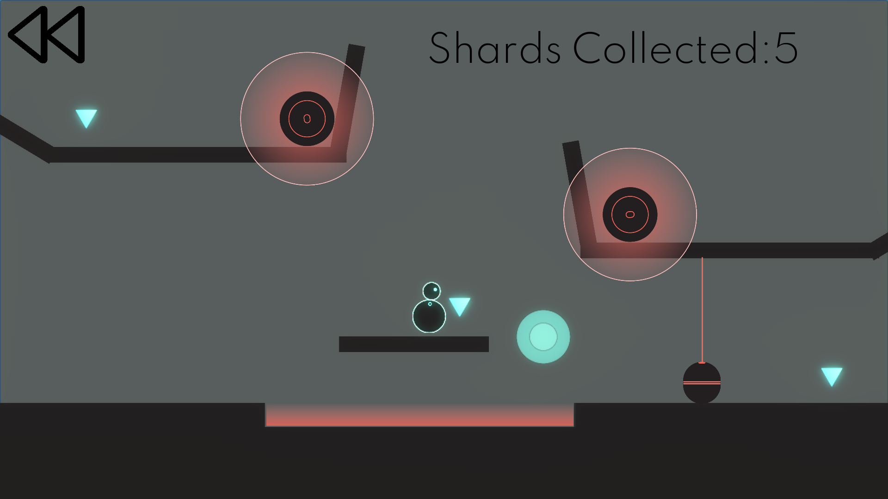
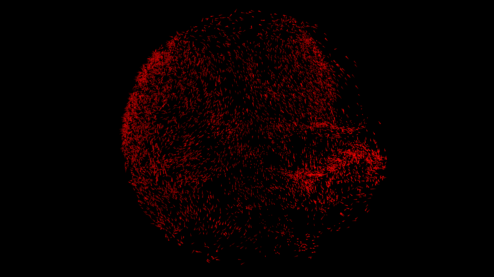
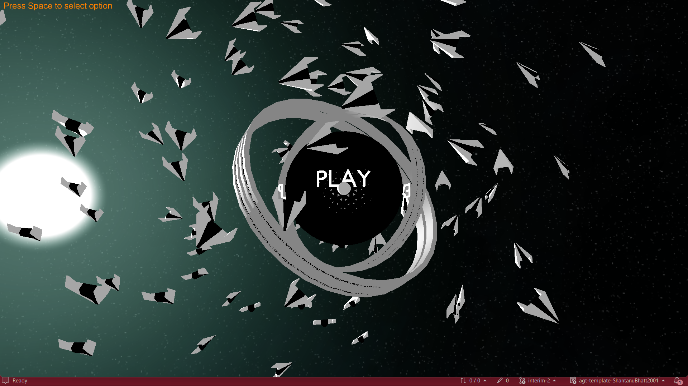
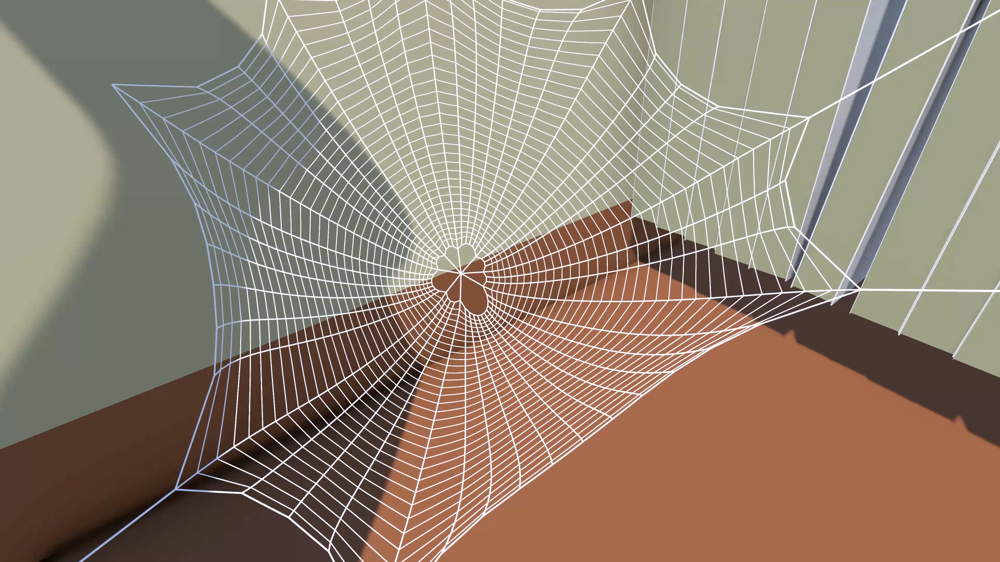
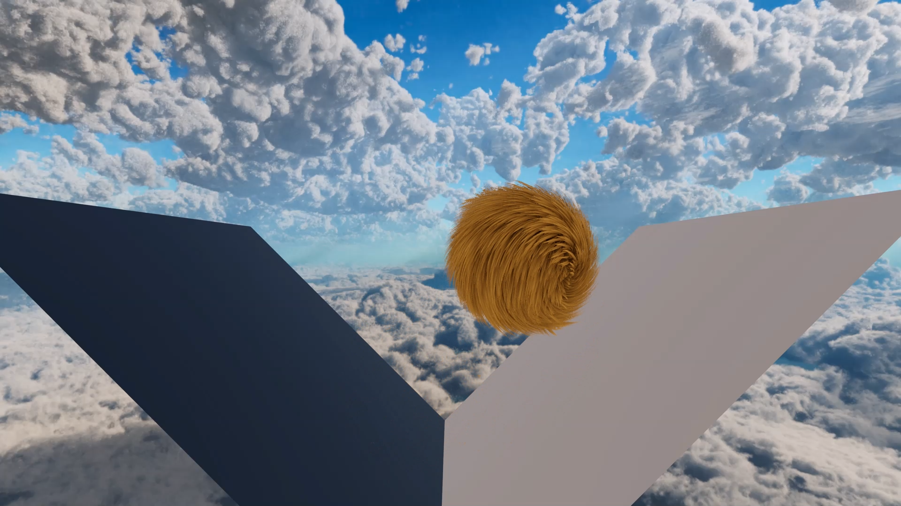
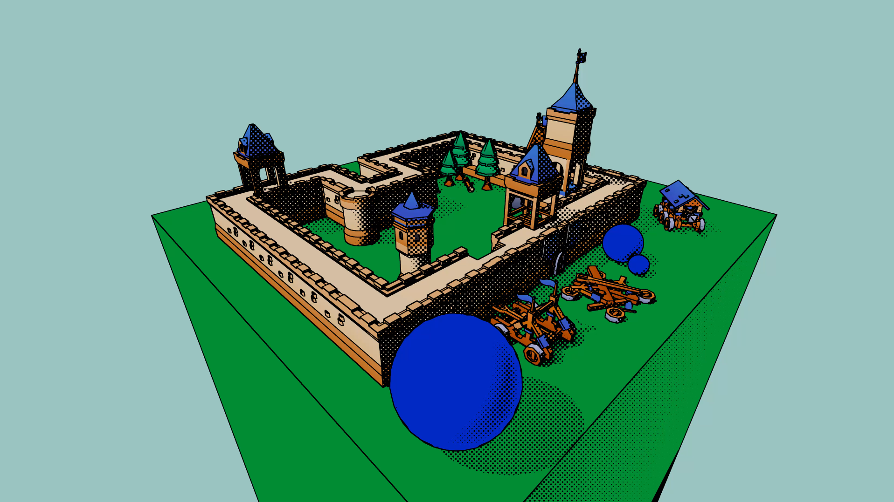
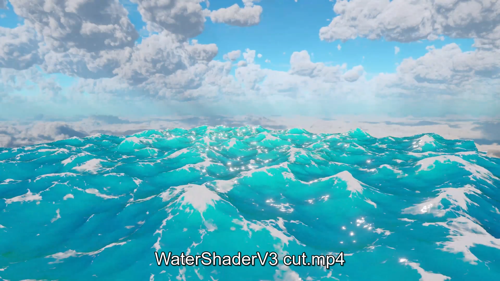

Unity and C#
A solo-built deduction game: watch five neighbours over five days and work out which one is not human. Each playthrough is generated by picking the culprit first, then deriving behaviour to fit. Evidence only counts if you were looking.

MonoGame and C#
Built in MonoGame for my Master’s coursework, on a framework that supplies rendering and no game systems. Collision written from scratch: circle-circle, circle to oriented bounding box, and OBB to OBB, split across threads for 300+ entities.

Unity 2D and C#
A 2D survival game built in 36 hours for Devs That Jam Challenge #8, where it placed second. Drill down through a Perlin-noise world for resources. Running the drill burns fuel, so the only way forward is also the way you lose. Art and music by killusion.

Unity HDRP and C#
A hypercasual infinite runner built in Unity with HDRP as a one-day challenge project. It features a procedurally generated course of cubes to dodge and power-ups for points, speed and shields, shipped playable within the day.

Unity 2D and C#
A BYOG Jam game on the theme “Reset”. Hover over any object to rewind it a few seconds, backed by a rolling log of position and rotation that stops recording once something settles. Three levels, team of three, development mine.

Unity ECS and Jobs System
A boid simulation in Unity ECS and the C# Job System, running 30,000+ agents in real time. Multi-hash spatial partitioning means each agent checks only nearby neighbours instead of every other one. Built after a GameDev.tv DOTS tutorial, then extended.

OpenGL and C++
A top-down wave survival game on a small planet, built in C++ and OpenGL on a university rendering framework. Three enemy types force different responses: chasers, ranged units that shell from range, and crawlers that leave mines. Camera replaced with a gimbal-lock-free implementation. Concept from Brackeys, models in Blender.

OpenGL and C++
A 3D simulation with a procedurally generated rollercoaster track built from Catmull-Rom splines and motion driven by Verlet integration. Built in C++ with OpenGL, it also includes procedurally generated sea waves and a mix of scripted and FBX-imported models.

MonoGame and C#
A lightweight 2D pixel-based sand simulator built in MonoGame with C#. Inspired by Conway’s Game of Life, it uses cellular automata rules to simulate falling particles, supporting interactive input and showing emergent behaviour from simple physics-inspired rules.

Unity, HLSL compute
A tool that grows a spider web to fit whatever room it is dropped into, as a live simulation of thousands of connected strands rather than a fixed model. Moving the solver to the GPU cut it from 23.99 ms to 0.69 ms per step across 5,621 nodes, a 35x speedup. The CPU version stays runnable behind a switch for comparison.

Unity URP, HLSL, tessellation
A real-time fur and grass effect for any surface, with every blade bending and springing back as things move through it. Profiling found memory lookups were the bottleneck; moving the bending to an earlier GPU stage cut them from 25 per pixel to one. Every layer draws in a single instruction.

Unity URP, HLSL, RenderGraph
Makes a 3D scene look like a printed comic book while the game runs, across ten rendering passes. Ink outlines come from a Canny edge detector on scene depth and surface angles. Dark colours read as shadow until true illumination was recovered from an albedo prepass.

Unity URP, HLSL, GPU compute
A live ocean surface with moving waves, foam and light through the crests, ported from OpenGL to Unity. Wave frequencies layer together with surface angles taken from the wave maths rather than a texture. Foam builds up where the water genuinely folds in on itself.